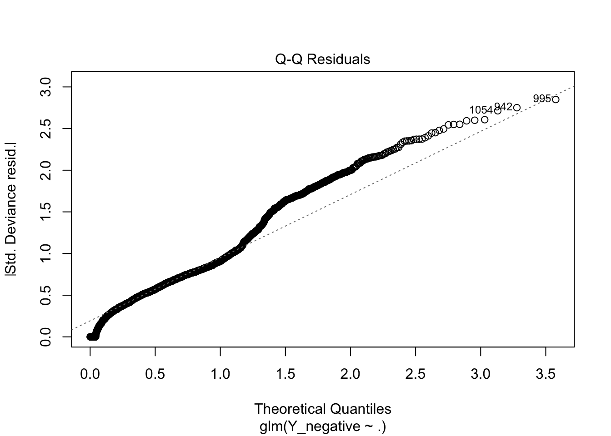
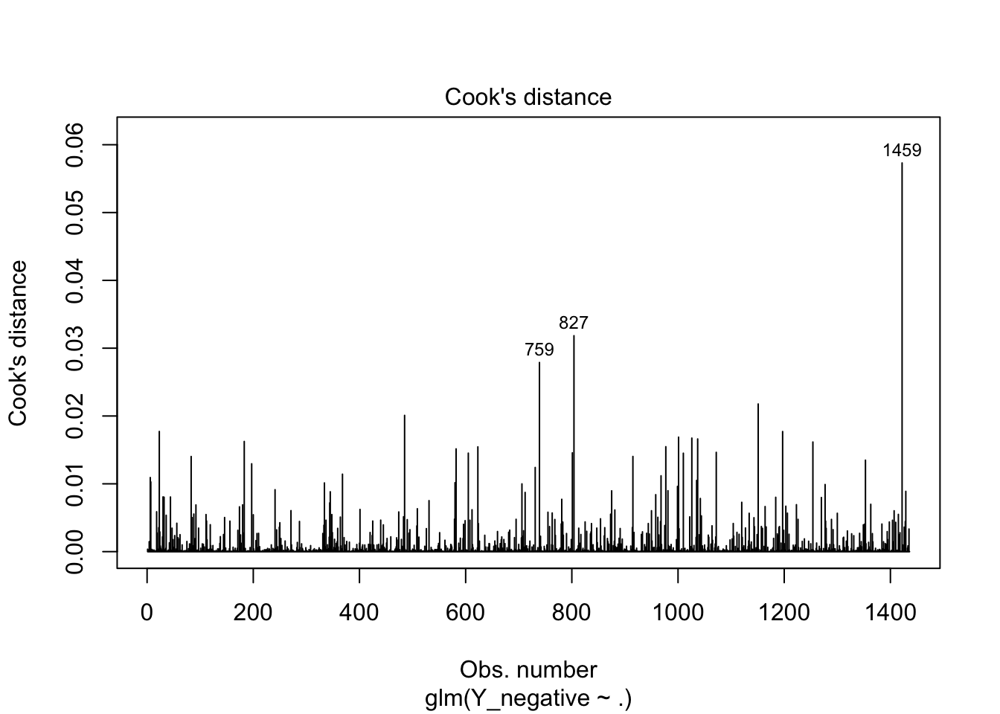

Final Project 260
Pathos: Associations of Word Usage and Emotions
Abstract
In the realm of psychology and neuroscience, understanding human experiences and emotions through text can present a fascinating challenge. In my analysis, I will use a dataset (X. Alice Li and Devi Parikh, 2019) that contains up to 3 entries from 500 participants highlighting salient moments of their day. Additionally, each response is labelled with one of 18 emotions. In my primary analysis, I will use the Apriori Algorithm, a process that finds frequent item associations in a dataset by efficiently sub-setting search candidates. To ensure that only important associations are being mined, I will filter out stop words. Next, I plan to use a penalized regression algorithm to explore a few final word associations and their relationships to labelled emotions through logistic regression. To complete this analysis, I dichotomized the original 18 emotional categories to just two: positive and negative. Ultimately, I hope that the findings of this experiment highlights possible areas for public health intervention.
Study
First we must import all necessary libraries and the data. Next we can begin an exploratory analysis.
# A tibble: 15 × 2
word total_frequency
<chr> <int>
1 10 17
2 2 22
3 3 15
4 4 14
5 5 14
6 accomplished 29
7 afternoon 19
8 amazing 17
9 amount 15
10 anxious 32
11 ate 44
12 bad 25
13 bed 53
14 birthday 16
15 bit 43 Word1 Word2 Frequency
9 yesterday day 137
83 yesterday time 108
5 time day 97
63 time family 75
106 spend time 75
90 spent time 74
79 happy time 69
168 feel yesterday 60
227 sleep night 60
104 feel time 57
22 spent day 55
40 feel day 54
219 makes feel 51
6 happy day 50
84 dinner time 47Warning in cbind(dtm, Y_positive): number of rows of result is not a multiple
of vector length (arg 2)Warning: glm.fit: fitted probabilities numerically 0 or 1 occurred
Call:
glm(formula = Y_positive ~ ., family = "binomial", data = X)
Coefficients:
Estimate Std. Error z value Pr(>|z|)
(Intercept) 2.004e+00 1.926e-01 10.402 < 2e-16 ***
`2` 1.214e+00 1.181e+00 1.028 0.30416
care 3.329e-01 6.918e-01 0.481 0.63031
children -1.298e+00 7.546e-01 -1.720 0.08549 .
day -1.079e-01 1.906e-01 -0.566 0.57153
days 3.407e-02 4.744e-01 0.072 0.94275
excited 8.151e-02 6.666e-01 0.122 0.90267
family 2.503e-01 3.102e-01 0.807 0.41973
hit 1.743e+00 1.505e+00 1.158 0.24679
love -8.561e-01 3.289e-01 -2.603 0.00925 **
months -1.239e-01 1.171e+00 -0.106 0.91578
salient -2.471e-01 7.095e-01 -0.348 0.72760
time 8.049e-02 2.295e-01 0.351 0.72576
body -6.117e-01 9.415e-01 -0.650 0.51591
fun 2.161e+00 8.391e-01 2.575 0.01002 *
happy -4.708e-02 2.896e-01 -0.163 0.87087
husband 2.672e-01 5.605e-01 0.477 0.63355
life 4.477e-01 4.013e-01 1.116 0.26451
played -3.851e-01 1.101e+00 -0.350 0.72659
relaxing -9.838e-01 6.977e-01 -1.410 0.15849
yesterday -3.510e-01 2.212e-01 -1.586 0.11265
catch -7.936e-02 6.493e-01 -0.122 0.90272
dinner -5.709e-01 3.953e-01 -1.444 0.14873
parents 1.282e+00 1.200e+00 1.068 0.28534
weeks 2.134e-01 9.938e-01 0.215 0.82998
wonderful -4.656e-02 6.857e-01 -0.068 0.94586
bit 2.008e-02 6.085e-01 0.033 0.97367
health 1.786e-01 4.807e-01 0.372 0.71025
people -8.008e-01 4.728e-01 -1.693 0.09036 .
usual 1.793e+01 1.998e+03 0.009 0.99284
boring 4.102e-01 8.928e-01 0.459 0.64596
frustrated -3.927e-01 6.521e-01 -0.602 0.54698
pretty -6.130e-01 5.156e-01 -1.189 0.23449
sad 5.807e-01 1.162e+00 0.500 0.61719
lot -3.568e-01 3.730e-01 -0.956 0.33891
morning 1.815e+00 8.684e-01 2.091 0.03656 *
ready 9.487e-01 1.139e+00 0.833 0.40502
woke 1.524e+00 1.299e+00 1.174 0.24059
proud 3.480e-01 4.888e-01 0.712 0.47642
busy 3.540e-01 8.543e-01 0.414 0.67862
slow 5.302e-02 7.422e-01 0.071 0.94305
god 2.454e-01 3.859e-01 0.636 0.52487
month 1.626e+01 2.527e+03 0.006 0.99487
read 1.737e+01 2.367e+03 0.007 0.99414
bed 1.063e-01 5.410e-01 0.197 0.84419
birthday 4.855e-01 8.790e-01 0.552 0.58070
spent -4.404e-01 4.532e-01 -0.972 0.33116
tv 8.316e-01 1.389e+00 0.599 0.54923
watching -2.705e-01 8.734e-01 -0.310 0.75678
eat 2.475e-01 5.301e-01 0.467 0.64062
loved -1.117e+00 6.997e-01 -1.596 0.11047
routine 1.724e+01 1.922e+03 0.009 0.99284
week 1.457e-02 5.795e-01 0.025 0.97994
weight 9.950e-01 1.072e+00 0.928 0.35349
workout -8.871e-01 5.575e-01 -1.591 0.11152
due 1.930e+00 1.545e+00 1.250 0.21147
job 1.873e-01 4.627e-01 0.405 0.68562
past 3.618e-01 1.019e+00 0.355 0.72250
productive 1.278e+00 1.259e+00 1.015 0.31009
daughter 4.237e-01 7.741e-01 0.547 0.58412
free 1.791e+01 2.225e+03 0.008 0.99358
school 6.274e-01 7.642e-01 0.821 0.41165
son -2.791e-01 5.471e-01 -0.510 0.60995
told -9.839e-01 6.251e-01 -1.574 0.11550
bad -1.601e-01 6.410e-01 -0.250 0.80274
couldnt 3.427e-01 8.594e-01 0.399 0.69008
im -5.145e-01 3.898e-01 -1.320 0.18679
pain -3.109e-01 7.415e-01 -0.419 0.67496
recently -4.072e-01 1.019e+00 -0.399 0.68958
found -8.440e-01 6.048e-01 -1.396 0.16285
wife -2.896e-01 4.677e-01 -0.619 0.53573
class 1.650e+01 2.055e+03 0.008 0.99360
hard 9.034e-01 6.971e-01 1.296 0.19497
hours -2.312e-01 5.081e-01 -0.455 0.64914
meet 7.335e-01 1.174e+00 0.625 0.53213
cook 1.820e+01 1.673e+03 0.011 0.99132
enjoyable 4.151e-01 1.139e+00 0.365 0.71548
hour 1.235e+00 9.242e-01 1.337 0.18134
times -3.632e-01 6.564e-01 -0.553 0.58005
wasnt -2.525e-01 9.512e-01 -0.265 0.79064
frustrating -1.306e+00 5.762e-01 -2.266 0.02347 *
goal -7.705e-02 8.938e-01 -0.086 0.93131
money 1.256e+00 7.639e-01 1.645 0.10002
pay -2.201e+00 9.302e-01 -2.367 0.01795 *
satisfied 6.349e-01 6.764e-01 0.939 0.34787
exercise 1.139e+00 7.062e-01 1.613 0.10666
gym 1.123e+00 1.182e+00 0.950 0.34223
set -4.717e-03 9.418e-01 -0.005 0.99600
`4` 4.221e-01 1.279e+00 0.330 0.74133
didnt -1.013e+00 4.605e-01 -2.200 0.02783 *
home 5.779e-01 4.330e-01 1.335 0.18202
miles 2.007e-01 9.549e-01 0.210 0.83348
friend -1.069e+00 4.043e-01 -2.645 0.00818 **
mile 8.228e-01 1.184e+00 0.695 0.48714
walk -1.123e+00 4.566e-01 -2.460 0.01388 *
eating 1.558e+00 1.313e+00 1.187 0.23531
sick 5.500e-01 7.622e-01 0.722 0.47059
dont 9.614e-01 7.022e-01 1.369 0.17094
feel 2.417e-01 2.856e-01 0.846 0.39749
havent 2.123e-01 8.920e-01 0.238 0.81185
healthy 7.084e-01 8.152e-01 0.869 0.38488
evening -4.737e-01 6.864e-01 -0.690 0.49011
met -1.387e-01 9.854e-01 -0.141 0.88804
movie 1.070e-01 1.005e+00 0.106 0.91521
spend -4.062e-02 5.657e-01 -0.072 0.94275
watched -4.471e-01 8.047e-01 -0.556 0.57850
`3` 8.007e-01 1.180e+00 0.678 0.49751
anxious -4.910e-01 6.497e-01 -0.756 0.44981
project 2.606e+00 1.358e+00 1.920 0.05488 .
feeling 2.754e-01 5.530e-01 0.498 0.61852
amazing -8.320e-01 7.533e-01 -1.105 0.26935
finish -5.787e-01 9.123e-01 -0.634 0.52589
started 1.498e+00 1.396e+00 1.073 0.28308
team 2.222e-01 1.234e+00 0.180 0.85708
sense -4.948e-01 9.727e-01 -0.509 0.61096
amount 9.267e-02 1.275e+00 0.073 0.94204
fairly 1.723e+01 2.312e+03 0.007 0.99405
talking 5.876e-02 7.668e-01 0.077 0.93891
makes -4.171e-01 4.042e-01 -1.032 0.30217
hes -9.731e-01 6.985e-01 -1.393 0.16355
talk -2.725e-01 5.057e-01 -0.539 0.58997
joy -1.918e-01 6.403e-01 -0.300 0.76455
spending 2.349e+00 1.217e+00 1.931 0.05354 .
mom 1.691e+01 1.946e+03 0.009 0.99307
nice 5.216e-01 4.210e-01 1.239 0.21535
friends -4.209e-01 3.317e-01 -1.269 0.20449
ive 7.134e-01 6.583e-01 1.084 0.27849
favorite -7.987e-01 6.908e-01 -1.156 0.24758
food 4.962e-01 4.498e-01 1.103 0.27000
conversation 8.638e-01 9.767e-01 0.884 0.37646
talked -1.918e-01 6.456e-01 -0.297 0.76635
start -8.501e-01 6.850e-01 -1.241 0.21458
taking 5.829e-02 8.697e-01 0.067 0.94656
live 4.098e-02 7.090e-01 0.058 0.95390
pizza 4.513e-01 7.949e-01 0.568 0.57019
enjoyed -4.440e-01 3.863e-01 -1.150 0.25034
playing 1.792e+01 2.366e+03 0.008 0.99396
normal 8.407e-01 1.120e+00 0.751 0.45284
glad -3.930e-01 6.400e-01 -0.614 0.53921
ate 1.298e+00 8.750e-01 1.483 0.13807
decided 2.904e-01 1.123e+00 0.259 0.79591
cold 1.329e+00 1.132e+00 1.175 0.24003
pleased 1.351e-01 9.763e-01 0.138 0.88991
dog 1.342e+00 1.013e+00 1.325 0.18530
surprised 1.728e+01 2.389e+03 0.007 0.99423
helped -7.515e-01 6.043e-01 -1.244 0.21366
`5` -5.402e-01 1.080e+00 -0.500 0.61684
`10` -5.728e-01 8.362e-01 -0.685 0.49333
night -4.950e-01 3.117e-01 -1.588 0.11222
refreshed -1.547e+00 9.559e-01 -1.618 0.10558
sleep -3.513e-01 3.230e-01 -1.088 0.27667
slept 2.496e-01 6.905e-01 0.362 0.71772
afternoon 9.498e-01 1.019e+00 0.932 0.35133
accomplished -1.273e+00 6.335e-01 -2.009 0.04455 *
grateful 1.938e+01 2.106e+03 0.009 0.99266
house -1.889e-01 7.674e-01 -0.246 0.80554
kids 1.300e+00 1.025e+00 1.268 0.20474
calm 1.908e+00 1.070e+00 1.783 0.07453 .
mind -4.277e-01 1.063e+00 -0.402 0.68744
couple -1.197e+00 7.890e-01 -1.517 0.12916
partner -4.665e-01 7.949e-01 -0.587 0.55727
chicken -1.574e+00 6.096e-01 -2.582 0.00984 **
complete -8.955e-01 6.906e-01 -1.297 0.19476
restaurant -4.919e-01 8.110e-01 -0.607 0.54412
enjoy 9.656e-01 7.819e-01 1.235 0.21683
person -9.229e-01 8.234e-01 -1.121 0.26239
cooking 1.819e+00 1.576e+00 1.154 0.24866
meal -3.065e-01 5.243e-01 -0.585 0.55882
everyday -2.561e+00 8.008e-01 -3.198 0.00139 **
relax -7.668e-01 7.393e-01 -1.037 0.29966
daily -6.130e-01 6.477e-01 -0.947 0.34387
super 7.012e-01 1.165e+00 0.602 0.54715
tired 1.525e-01 7.924e-01 0.192 0.84737
watch 1.483e+00 1.130e+00 1.312 0.18960
special 4.413e-01 8.644e-01 0.510 0.60971
finally 1.833e-01 5.473e-01 0.335 0.73763
cooked 7.114e-01 9.879e-01 0.720 0.47149
delicious -7.489e-01 5.680e-01 -1.319 0.18731
breakfast -1.371e-02 7.995e-01 -0.017 0.98632
lunch -4.856e-01 7.454e-01 -0.652 0.51472
bought 9.686e-01 1.170e+00 0.828 0.40778
minutes -7.371e-01 9.426e-01 -0.782 0.43424
run 5.019e-01 8.875e-01 0.566 0.57173
goals 9.740e-01 1.200e+00 0.812 0.41697
game 1.618e+01 2.207e+03 0.007 0.99415
doesnt 9.976e-01 1.184e+00 0.842 0.39958
running -2.190e-01 8.257e-01 -0.265 0.79084
brother 3.511e-01 8.473e-01 0.414 0.67859
phone -9.081e-01 7.004e-01 -1.297 0.19478
helps -3.276e-01 1.112e+00 -0.295 0.76822
sister 1.162e+00 1.107e+00 1.050 0.29366
difficult -8.139e-01 7.282e-01 -1.118 0.26369
forward 4.861e-01 8.605e-01 0.565 0.57213
energized -1.265e+00 9.687e-01 -1.306 0.19145
ill -1.076e+00 9.155e-01 -1.175 0.24001
nights 3.759e-01 8.053e-01 0.467 0.64067
rest 1.558e-01 7.217e-01 0.216 0.82905
exercising 1.704e+01 2.318e+03 0.007 0.99414
relaxed 6.396e-02 1.007e+00 0.063 0.94937
video -5.081e-01 1.019e+00 -0.499 0.61795
recipe -5.940e-01 6.001e-01 -0.990 0.32222
sleeping 2.341e+00 1.556e+00 1.505 0.13236
---
Signif. codes: 0 '***' 0.001 '**' 0.01 '*' 0.05 '.' 0.1 ' ' 1
(Dispersion parameter for binomial family taken to be 1)
Null deviance: 1122.26 on 1435 degrees of freedom
Residual deviance: 859.47 on 1234 degrees of freedom
AIC: 1263.5
Number of Fisher Scoring iterations: 18
Warning in cbind(dtm, Y_negative): number of rows of result is not a multiple
of vector length (arg 2)Warning: glm.fit: fitted probabilities numerically 0 or 1 occurred
Call:
glm(formula = Y_negative ~ ., family = "binomial", data = X)
Coefficients:
Estimate Std. Error z value Pr(>|z|)
(Intercept) -1.213091 0.150612 -8.054 7.98e-16 ***
`2` -0.232719 0.770735 -0.302 0.76270
care 0.387184 0.474872 0.815 0.41488
children 0.629033 0.568002 1.107 0.26810
day 0.122217 0.148636 0.822 0.41093
days -0.112707 0.382810 -0.294 0.76844
excited 0.007438 0.506410 0.015 0.98828
family -0.174327 0.234078 -0.745 0.45643
hit 0.614605 0.878580 0.700 0.48421
love 0.375328 0.285230 1.316 0.18821
months 0.854475 0.771951 1.107 0.26834
salient 0.889988 0.524235 1.698 0.08957 .
time 0.033814 0.181768 0.186 0.85242
body -0.159482 0.845730 -0.189 0.85043
fun -1.447462 0.576001 -2.513 0.01197 *
happy 0.072763 0.229540 0.317 0.75125
husband -0.613656 0.466788 -1.315 0.18863
life -0.468653 0.328284 -1.428 0.15341
played 0.455521 0.743732 0.612 0.54022
relaxing 0.431920 0.586837 0.736 0.46172
yesterday 0.160906 0.181757 0.885 0.37600
catch 0.194779 0.573142 0.340 0.73397
dinner 0.582460 0.307995 1.891 0.05861 .
parents -0.430825 0.681444 -0.632 0.52724
weeks 0.195078 0.701551 0.278 0.78096
wonderful -0.147574 0.546902 -0.270 0.78729
bit -0.640131 0.541806 -1.181 0.23741
health 0.050573 0.337256 0.150 0.88080
people 0.490698 0.410910 1.194 0.23241
usual -1.872140 1.121251 -1.670 0.09498 .
boring -0.331308 0.769721 -0.430 0.66689
frustrated 0.162643 0.555150 0.293 0.76954
pretty 0.111687 0.462220 0.242 0.80907
sad -0.731627 0.813316 -0.900 0.36835
lot 0.153495 0.316550 0.485 0.62775
morning -1.294278 0.594681 -2.176 0.02952 *
ready -0.284542 0.721197 -0.395 0.69318
woke -0.345040 0.805210 -0.429 0.66828
proud -0.186931 0.371210 -0.504 0.61456
busy -0.188273 0.645064 -0.292 0.77039
slow -0.134435 0.642217 -0.209 0.83419
god -0.448832 0.333999 -1.344 0.17901
month -15.864993 969.060698 -0.016 0.98694
read -15.511131 889.875869 -0.017 0.98609
bed -0.251450 0.464083 -0.542 0.58794
birthday -0.284262 0.740853 -0.384 0.70120
spent 0.163292 0.384651 0.425 0.67119
tv -0.964897 1.286090 -0.750 0.45310
watching 0.179794 0.722387 0.249 0.80345
eat -0.408077 0.434013 -0.940 0.34709
loved 0.255136 0.636530 0.401 0.68855
routine -1.188033 1.048254 -1.133 0.25707
week 0.205514 0.407372 0.504 0.61392
weight -0.739951 0.847287 -0.873 0.38249
workout 0.513775 0.472261 1.088 0.27664
due -1.291555 0.947710 -1.363 0.17294
job -0.169268 0.375981 -0.450 0.65256
past 0.979051 0.643924 1.520 0.12840
productive -1.408893 0.904816 -1.557 0.11945
daughter -0.881955 0.605332 -1.457 0.14512
free -1.681039 1.196815 -1.405 0.16014
school -1.208946 0.678021 -1.783 0.07458 .
son -0.161887 0.495256 -0.327 0.74376
told 0.570753 0.529295 1.078 0.28089
bad -0.251631 0.565239 -0.445 0.65619
couldnt 0.433191 0.670520 0.646 0.51825
im 0.197592 0.310888 0.636 0.52505
pain 0.389489 0.599637 0.650 0.51599
recently 0.674815 0.771947 0.874 0.38202
found 0.417413 0.525339 0.795 0.42687
wife 0.174257 0.363253 0.480 0.63143
class -15.077473 801.793907 -0.019 0.98500
hard -0.856033 0.509353 -1.681 0.09284 .
hours -0.400374 0.452746 -0.884 0.37652
meet -0.057514 0.859020 -0.067 0.94662
cook 0.053149 0.541452 0.098 0.92180
enjoyable 0.136467 0.737525 0.185 0.85320
hour -0.450114 0.696434 -0.646 0.51808
times 0.402779 0.547343 0.736 0.46180
wasnt 0.135328 0.735994 0.184 0.85411
frustrating 0.843182 0.515757 1.635 0.10208
goal -0.383607 0.715445 -0.536 0.59183
money -0.781938 0.523296 -1.494 0.13511
pay 2.409306 0.783924 3.073 0.00212 **
satisfied -0.137776 0.458621 -0.300 0.76386
exercise -0.882362 0.479415 -1.840 0.06570 .
gym -0.846368 0.873872 -0.969 0.33278
set 0.057588 0.748661 0.077 0.93869
`4` -1.720943 1.431899 -1.202 0.22942
didnt 0.568622 0.402900 1.411 0.15815
home 0.131025 0.286860 0.457 0.64785
miles -0.092084 0.787909 -0.117 0.90696
friend 0.377072 0.342479 1.101 0.27089
mile -1.625830 1.076951 -1.510 0.13113
walk 1.206363 0.397139 3.038 0.00238 **
eating -1.178429 0.833547 -1.414 0.15743
sick -0.244668 0.570303 -0.429 0.66791
dont -0.837057 0.522379 -1.602 0.10907
feel -0.053994 0.212972 -0.254 0.79986
havent 0.077056 0.677908 0.114 0.90950
healthy -0.216610 0.532867 -0.406 0.68438
evening -0.262568 0.558736 -0.470 0.63840
met -0.198308 0.864250 -0.229 0.81851
movie -0.397235 0.923168 -0.430 0.66698
spend 0.434539 0.419120 1.037 0.29983
watched -0.143096 0.773062 -0.185 0.85315
`3` -0.524050 0.870631 -0.602 0.54723
anxious 0.217122 0.523046 0.415 0.67806
project -1.677023 0.730987 -2.294 0.02178 *
feeling 0.069371 0.383398 0.181 0.85642
amazing 1.369791 0.637812 2.148 0.03174 *
finish -0.051516 0.838548 -0.061 0.95101
started -0.295807 0.693127 -0.427 0.66955
team 0.099592 0.826942 0.120 0.90414
sense -0.387931 0.880791 -0.440 0.65962
amount -0.241424 0.924080 -0.261 0.79389
fairly -16.503438 904.105646 -0.018 0.98544
talking 0.234564 0.578689 0.405 0.68523
makes 0.158281 0.332005 0.477 0.63355
hes 0.832409 0.621758 1.339 0.18064
talk 0.110498 0.447660 0.247 0.80504
joy 0.136222 0.530712 0.257 0.79743
spending -1.813565 0.863959 -2.099 0.03581 *
mom -0.880678 0.727949 -1.210 0.22635
nice -0.263436 0.321756 -0.819 0.41293
friends 0.038582 0.282795 0.136 0.89148
ive -1.002969 0.600076 -1.671 0.09464 .
favorite 0.607619 0.552004 1.101 0.27101
food -0.450721 0.362829 -1.242 0.21415
conversation -0.747098 0.758318 -0.985 0.32452
talked 0.504093 0.514825 0.979 0.32750
start 0.588594 0.580614 1.014 0.31070
taking 0.437121 0.660760 0.662 0.50826
live -0.292271 0.601798 -0.486 0.62721
pizza -0.416541 0.606026 -0.687 0.49187
enjoyed -0.030520 0.356956 -0.086 0.93186
playing -1.047545 1.139434 -0.919 0.35791
normal -1.599869 1.154509 -1.386 0.16582
glad 0.525788 0.523987 1.003 0.31565
ate -1.003157 0.648041 -1.548 0.12163
decided 0.515736 0.728036 0.708 0.47870
cold -0.162428 0.697917 -0.233 0.81597
pleased 0.414933 0.702560 0.591 0.55479
dog -1.956472 0.887320 -2.205 0.02746 *
surprised -0.318475 0.876862 -0.363 0.71646
helped 0.406395 0.518362 0.784 0.43304
`5` 0.200249 0.975936 0.205 0.83743
`10` 1.104016 0.728828 1.515 0.12983
night 0.132170 0.267618 0.494 0.62140
refreshed 0.602101 0.804792 0.748 0.45437
sleep 0.089499 0.283367 0.316 0.75212
slept -0.047861 0.578808 -0.083 0.93410
afternoon -0.415681 0.764925 -0.543 0.58684
accomplished 0.776742 0.524680 1.480 0.13876
grateful -1.597789 1.140927 -1.400 0.16138
house 0.101289 0.535831 0.189 0.85007
kids -0.085029 0.586856 -0.145 0.88480
calm -0.553742 0.600387 -0.922 0.35637
mind -0.623787 1.035489 -0.602 0.54690
couple 0.266128 0.675274 0.394 0.69350
partner -0.406906 0.718449 -0.566 0.57114
chicken 1.088817 0.510063 2.135 0.03279 *
complete 0.564171 0.600898 0.939 0.34779
restaurant -0.056836 0.779906 -0.073 0.94191
enjoy -0.836062 0.557018 -1.501 0.13337
person 0.374647 0.760357 0.493 0.62221
cooking -0.746165 0.915401 -0.815 0.41500
meal -0.070224 0.437553 -0.160 0.87249
everyday 1.787707 0.648778 2.755 0.00586 **
relax 0.026994 0.659306 0.041 0.96734
daily -0.095552 0.545306 -0.175 0.86090
super -0.383021 0.865628 -0.442 0.65814
tired -0.225840 0.639401 -0.353 0.72393
watch -1.486522 1.074107 -1.384 0.16637
special -0.014916 0.613629 -0.024 0.98061
finally -0.620386 0.469106 -1.322 0.18601
cooked -0.437631 0.756438 -0.579 0.56290
delicious 0.287729 0.461892 0.623 0.53333
breakfast -0.442976 0.750298 -0.590 0.55492
lunch 0.164607 0.662274 0.249 0.80371
bought -0.762142 0.835737 -0.912 0.36180
minutes 0.548631 0.824391 0.665 0.50573
run -1.179473 0.844606 -1.396 0.16257
goals -1.424522 1.113575 -1.279 0.20081
game -0.685807 0.933568 -0.735 0.46258
doesnt 0.167693 0.736165 0.228 0.81981
running -0.375278 0.816869 -0.459 0.64594
brother -0.515804 0.735889 -0.701 0.48335
phone 0.448298 0.626627 0.715 0.47435
helps 0.612786 0.762296 0.804 0.42147
sister -0.507345 0.801848 -0.633 0.52692
difficult -0.157518 0.733822 -0.215 0.83004
forward -0.197451 0.715568 -0.276 0.78260
energized 1.349074 0.752158 1.794 0.07288 .
ill 0.520199 0.853735 0.609 0.54231
nights -0.888463 0.789285 -1.126 0.26031
rest -0.453629 0.610577 -0.743 0.45751
exercising -0.667205 1.200277 -0.556 0.57830
relaxed -0.945591 0.937260 -1.009 0.31303
video 0.357821 0.825693 0.433 0.66475
recipe 0.116744 0.524524 0.223 0.82387
sleeping -0.720361 0.750235 -0.960 0.33696
---
Signif. codes: 0 '***' 0.001 '**' 0.01 '*' 0.05 '.' 0.1 ' ' 1
(Dispersion parameter for binomial family taken to be 1)
Null deviance: 1425.4 on 1435 degrees of freedom
Residual deviance: 1202.7 on 1234 degrees of freedom
AIC: 1606.7
Number of Fisher Scoring iterations: 16
